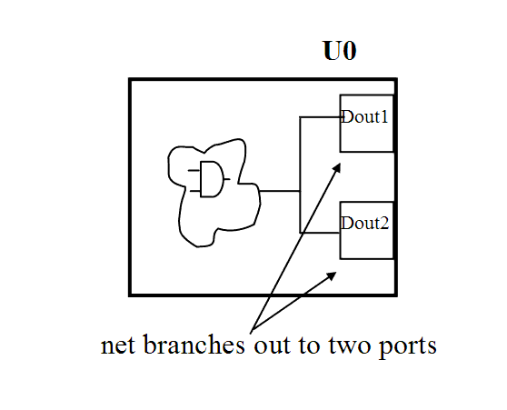

| Description | This rule fires when Leda detects nets that branch out to two different ports of the same module. Avoiding such nets improves signal tracking in design analysis and saves area during manufacturing. |
| Policy | DESIGN |
| Ruleset | STRUCTURE |
| Language | VHDL/Verilog |
| Type | Hardware |
| Severity | Error |
This is an example of invalid Verilog code, followed by a circuit diagram that illustrates the problem:
module ntl_str12_top (Din, Dout1, Dout2); input Din; output Dout1, Dout2; assign Dout1 = Din; assign Dout2 = Din; // NTL_STR12 fires -- Din branches to two different ports of the // same module endmodule